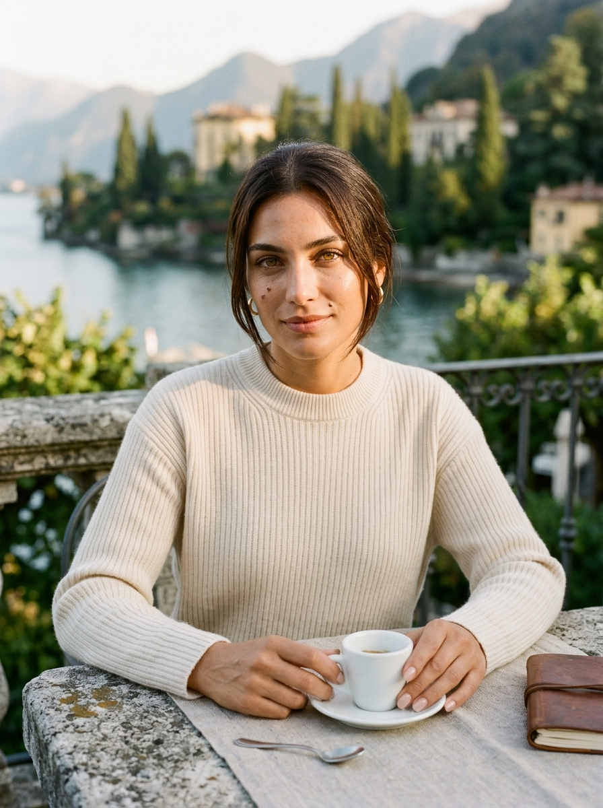
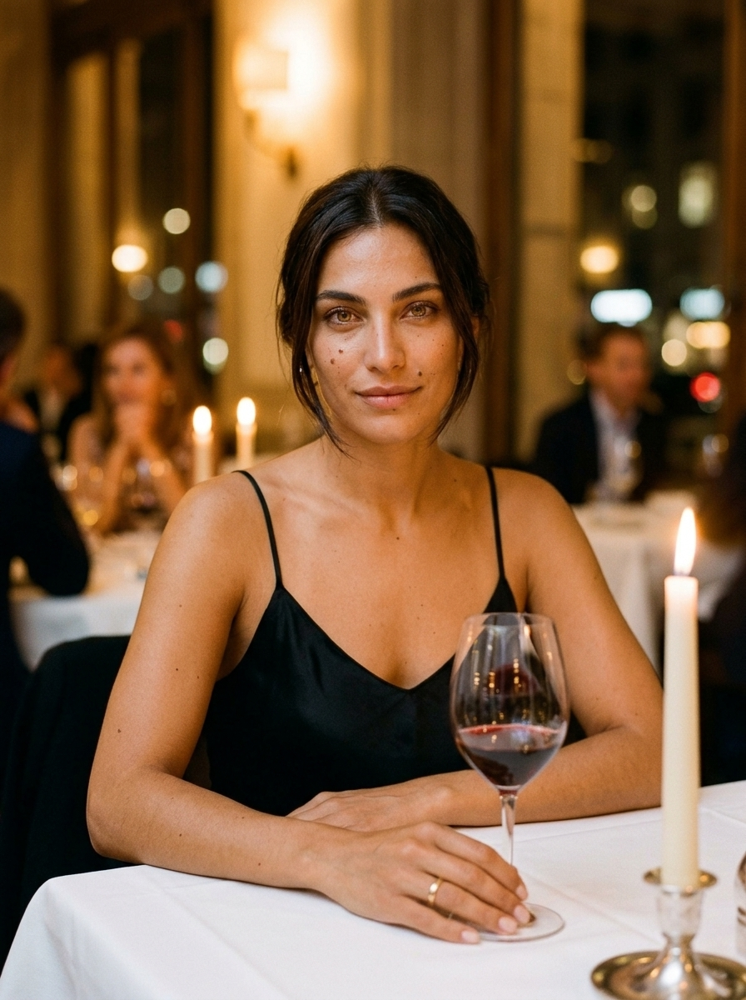
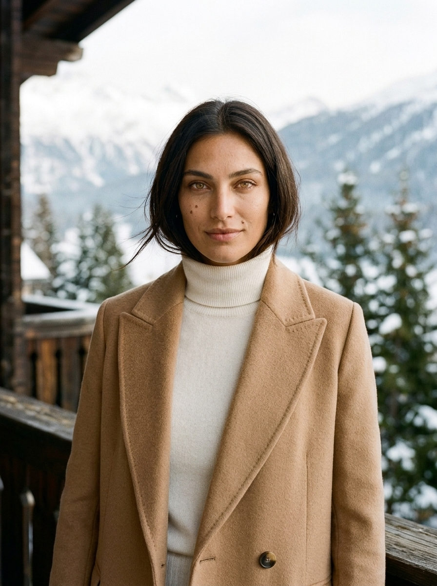
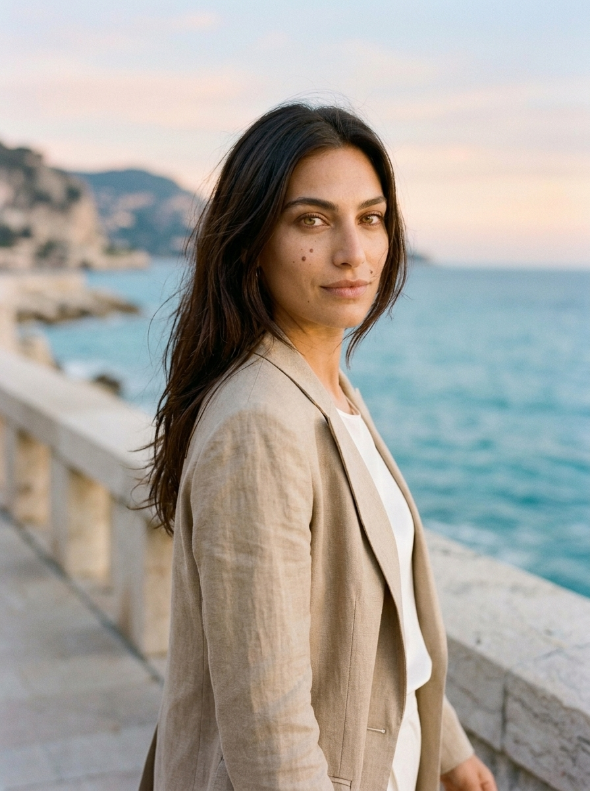

Flawless LoRA Face Consistency, Natural Skin Micro-Texture & Subtle Luxury Motion
Built specifically for the Amara Quiet Luxury production pipeline. Below is a live demonstration of our 4-Stage ComfyUI + Photoshop QC Workflow enforcing Amara's locked biometric markers (hazel-amber eyes, left-cheekbone signature beauty mark, zero plastic skin, verified 5-finger anatomy) alongside our Interactive ComfyUI Prompt & Weekly Google Drive Manifest Builder.
Amara Editorial Lookbook — 4 Quiet Luxury Environments

Morning Cashmere & Espresso
Unbranded cream cashmere knit, natural morning sidelight, porcelain cup grip, micro-skin texture retention.

Candlelight Silk & Crystal
Minimalist black silk slip, warm candle catchlights in hazel-amber eyes, shallow depth of field.

Alpine Sun & Camel Coat
Tailored camel coat over ivory turtleneck, crisp winter sun, fine cashmere weave and natural flyaway hairs.

Golden Hour Tailored Linen
Over-the-shoulder glance on limestone promenade, golden hour rim light, natural Kodak Portra 400 grain.
Subtle Micro-Movements, Zero Temporal Flicker & Locked Identity
For Quiet Luxury Reels, less motion is more realistic. We feed our retouched, Photoshop-verified ComfyUI master stills as locked First-Frame anchors into Kling 3.0 Pro, Wan 2.1, and Luma Ray 2 with low motion-bucket parameters (subtle breeze in hair, slow espresso sip, gentle eye-line turn, soft camera dolly).
Demonstrates multi-shot facial identity retention, natural skin lighting, and cinematic grading across varied environments.
Demonstrates strict anatomical accuracy (hands, props, specular reflections) and seamless motion transitions without AI warping.